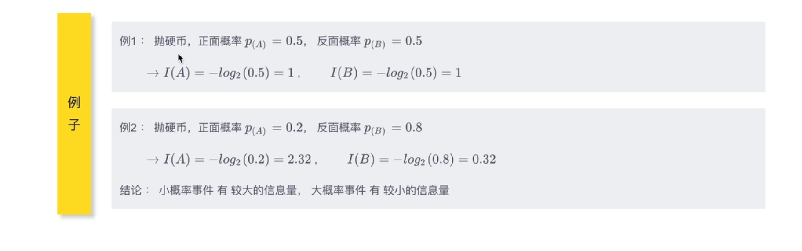
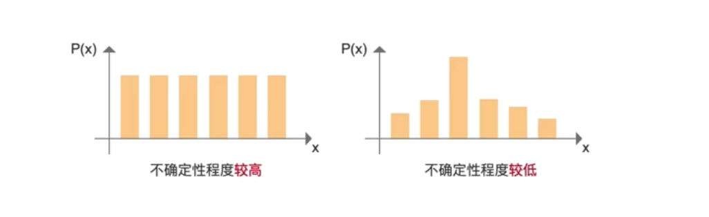
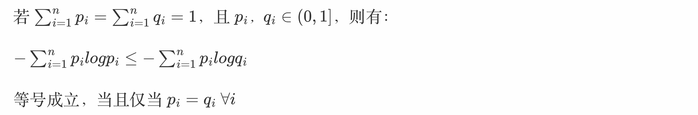

KL divergence¶
信息量 ｜熵 ｜ 交叉熵 ｜KL散度 （相对熵）｜交叉熵损失函数
1 前言¶
信息量
\(I(x) = \log_2{\frac{1}{p(x)}} = -\log_2{p(x)}\)
熵
\(H(P)=\sum p_iI_i^p=-\sum p_i \log_2(p_i)\)
交叉熵
\(H(p,q) = \sum p_i I_i^q = -\sum p_i log_2(q_i)\)
相对熵（KL散度）
\(D_{KL}(p||q) = \sum p_i \log_2 \frac{p_i}{q_i}\)
交叉熵损失函数（Cross Entropy Loss）
\(H(p,q) = -\log_2 (q_{class})\)
逐步递进，后面的概念建立在前面的概念基础之上
2 信息量¶
信息量 Amount of Information
定义：
事件包含的信息量大小（事件发生的难度有多大）
- 小概率事件，它发生的难度比较大，所以有较大的信息量
- 大概率事件，它发生的难度比较小，所以有较小的信息量
例子：

性质：
对于独立事件A、B：\(P(AB)=P(A)P(B)\)
两个事件同时发生的信息量 等于 两个事件的信息量 相加 ：\(I(AB)=I(A)+I(B)\)
信息量公式：
\(I(x):= \log_2(\frac{1}{p(x)})=-log_2(p(x))\)
:=表示定义为，是一种人为定义=是数学意义上的左边 = 右边I:information- 公式怎么设计的？
（1）\(p(x)\) ：表示事件发生的概率，取值范围： \(0 \leq p(x) \leq 1\)
（2）概率 \(p(x)\) 和 信息量 \(I(x)\) 是 负相关的 \(\rightarrow\) \(I(x):=\frac{1}{p(x)}\)
（3）两个事件同时发生的信息量 等于 两个 事件的信息量相加 \(I(AB)=I(A)+I(B)\)
\(I(AB)=log_2\frac{1}{P(AB)}=log_2\frac{1}{P(A)P(B)}=log_2\frac{1}{P(A)}+log_2\frac{1}{P(B)} = I(A)+I(B)\)
信息量的定义：log以2为底概率分之一
（4）以2为底，是转换到二进制下表示复杂度（以e为底、以10为底都可以，只是以2为底更优）
计算信息量的例子：

信息量的定义：log以2为底概率分之一
3 熵¶
熵 Entropy
定义：
1、概率分布的信息量期望
2、系统整体的信息量
系统整体由所有可能发生的事件构成
例子：抛硬币，正面和反面 构成一个系统
公式：
\(H(P)=\sum p_i I_i = \sum p_i \log_2 \frac{1}{p_i} = -\sum p_i \log_2 p_i\)
计算实例：

作用：
用来评估 概率模型 的不确定程度
- 不确定性越大，熵越大
- 不确定性越小，熵越小
图示：

- 概率完全相等时，我们完全不确定哪个会发生
- 对于 第二张图，第三个事件的概率高一些，所以更有可能发生，也就是说 这个系统的熵小一些
例子：

从例子中可以得出结论：（例1 系统的熵 > 例2 的熵）
- 若概率密度均匀，产生的随机变量不确定性就更高，则熵的值就更大
- 若概率密度聚拢，产生的随机变量不确定性就更低，则熵的值就更小
总结：
如果一个系统中只有两个事件A、B，且事件A发生的概率P(A)，事件B发生的概率 P(B)，那么这个系统的熵：
H(P) = P(A)I(A)+P(B)I(B)
\(= P(A)log_2\frac{1}{P(A)} + P(B)log_2\frac{1}{P(B)}\)
\(H(P)=\sum_{i=1}^nP_iI(i)\) \(\sum_iP_i = 1\)
4 交叉熵¶
交叉熵 cross entropy
定义：
假设 真实概率分布为 p，预测概率分布为 q，则预测概率分布q 对 真实概率分布p的平均信息量的估计，叫做交叉熵
- （预测概率分布 也叫 估计概率分布）
公式：
\(H(p,q)=\sum p_iI_i^q=-\sum p_i \log_2(q_i)\)
\(H(p,q) = \sum p_iI(q_i)\)
例子：

由例子的结果，观察可知：
（1）预估爱侣分布 与 真实概率分布 越接近，交叉熵越小
（2）交叉熵的值 总是大于 熵的值 （根据 吉布斯不等式）
（3）对于例子中，\(P(A)=P(B)=\frac{1}{2}\)
熵 \(H(P)=1\)
但是计算出来的 交叉熵 \(H(p,q)>H(p)\)
补充：吉布斯不等式
若 \(\sum_{i=1}^np_i=\sum_{i=1}^nq_i=1\)，且 \(p_i，q_i \in (0,1]\)，则有：
\(-\sum_{i=1}^np_ilogp_i\leq-\sum_{i=1}^np_ilogq_i\)
等号成立，当且仅当 \(p_i =q_i \ {\forall} i\)
真实概率的熵 永远 小于等于 交叉熵
5 KL散度（相对熵）¶
相对熵 Relative Entropy、KL散度 （KL divergence、Kullback-Leibler divergence）
作用：
用于衡量2个概率分布之间的差异
根据后面的公式，两个分布之间的差异，就是两个分布信息量的差
公式：
\(D_{KL}(p||q) = \sum p_i (I_q-I_p)\) 、 \(I_q - I_p\) 为信息量之差
\(=\sum p_i(log_2\frac{1}{q_i}-log_2\frac{1}{p_i})\)
\(=\sum p_ilog_2\frac{1}{q_i}-p_ilog_2\frac{1}{p_i}\)
\(=H(p,q)-H(p)\) （所以叫 相对熵、或者 \(H(p)=H(p,p)\)）
\(= \sum p_i log_2\frac{p_i}{q_i}\) (常用的展开式)
- \(p和q的交叉熵 - p的熵\)
重要性质：
（1）\(D(p||q)\) 与 \(D(q||p)\) 不一样，即 \(D(p||q) \neq D(q||p)\)
- \(D(p||q)\) 表示 以\(p\)为基准（\(p\)为真实概率分布），估计概率分布 \(q\) 与 真实概率分布 \(p\)之间的差距
- \(D(q||p)\) 表示 以\(q\)为基准（\(q\)为真实概率分布），估计概率分布\(p\)与真实概率分布\(q\)之间的差距
- 前面的分布作为 真实概率分布，计算
真实分布与估计分布之间的交叉熵-真实分布的信息熵
（2）\(KL散度的值 \geq 0\) \(\iff\) \(D_{KL}(p||q) \geq 0\)
吉布斯不等式说明：

所以 \(D_{KL}(p||q) \geq 0\)
特别的，当分布 \(q\)与分布\(p\)完全一样时，\(D(p||q)=0\)
真实概率p的熵 \(\leq\) p和q的交叉熵
所以 \(D_{KL}(p||q)=H(p,q)-H(p) \geq 0\)
6 交叉熵损失函数¶
交叉熵损失函数 Cross Entropy Loss
由上可知，KL散度\(D(p||q)\) 表示 预测分布q 与真实分布p 之间的差距，所以 我们可以直接将 损失函数 定义为 KL散度：\(Loss = D(p||q)\)
损失函数 = KL散度
并且我们希望 模型的预测分布q 与 真实分布p 完全相同，即：损失函数 \(Loss=D(p||q)=0\)
损失函数：
\(Loss = D(p||q)=H(p,q)-H(p)\)
- p与q的交叉熵 - p的信息熵
- p是真实分布
- \(D(p||q)=H(p,q)-H(p)=\sum p_i log_2(\frac{1}{q_i})-\sum p_ilog_2\frac{1}{p_i}\)
对于分类问题：
- 交叉熵损失函数一般用于分类问题，分类问题一般是一个单点分布
- \(\iff\) 等价于 真实类别 概率 = 1，其他类别概率 = 0
真实分布是一个单点分布，真实类别的概率为1，其他类别的概率为0，类似如下：
| 类别 | class1 | class2 | class3 | class4 |
|---|---|---|---|---|
| 概率 | 0 | 0 | 1 | 0 |
- \(p_{class1} = p_{class2} = p_{class4} = 0\)
- $\log2(\frac{1}{p_{classs3}}) = 0 $
- 所以，\(H(p)=\sum p_i I(p_i) = \sum p_i log_2{\frac{1}{p_i}}=0\)
推导：
首先有 损失：
\(Loss = D(p||q)=H(p,q)-H(p) = \sum p_i log_2(\frac{1}{q_i})-\sum p_ilog_2\frac{1}{p_i}\)
由，\(H(p)=0\)
∴ \(Loss = H(p,q)-H(p) = H(p,q)\)
由 \(H(p,q)\) 是交叉熵，所以损失函数 又称为 交叉熵损失函数：
\(Cross\_Entropy\_Loss = H(p,q) = \sum p_i log_2\frac{1}{q_i}\)